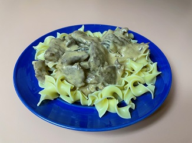

Classic Beef Stroganoff

Classic Beef Stroganoff
This recipe is from the family cook book, but not likely a family recipe.
Just a nice classic recipe to enjoy over rice or noodles.
Ingredients
- 1 Lb Sirloin or Tenderloin
- 1/2 Lb Fresh Mushrooms sliced
- 1/2 Cup minced Onion
- 2 Tbsp Butter
- 1 Can (10 1/2 OZ) Beef Consomme
- 2 Tsp Ketchup
- 1 small minced Garlic clove
- 1 Tsp Salt
- 1 Cup Sour cream (8 OZ)
Steps
- Cut meat diagonally into very thin slices
- In medium skillet, saute onions and mushrooms in butter
until onions are tender, remove and set aside
- In same skillet, brown meat on both sides
- Set aside 1/3 cup of beef Consomme
- Stir remaining consomee, ketchup, garlic, and salt into skillet,
cover and simmer for 15 min.
- Blend reserved 1/3 cup of consomee and flour, stir into skillet
- Add mushroom and onion, heat to boiling, stirring constantly
- Boil 20 minutes, stir in sour cream and heat through
- Serve over hot noodles or rice